💡 慕尼黑獨旅行前懶人包
🛑 慕尼黑獨旅防雷與隱藏密技
💶週日博物館只要1歐元
雖然週日商店不開門，但這天卻是逛博物館的黃金日！慕尼黑各大州立博物館（如老繪畫陳列館、巴伐利亞國立博物館等）在星期天門票統統只要 1 歐元，是獨旅者大省預算的完美時機。
🍺啤酒花園自帶食物的秘密
慕尼黑的傳統啤酒花園（Biergarten）通常分兩區。只要你坐在自帶食物區（Brotzeit-Bereich），並向店家點一杯飲料/啤酒，你就可以合法、正當地拿出自己從超市買來的香腸或食物大快朵頤，體驗最道地的巴伐利亞野餐風情！
🗺️ 必做體驗：慕尼黑 22 大絕美景點
慕尼黑不僅擁有奢華的王宮與古典教堂，更有全球首屈一指的科技博物館與廣闊的綠地公園。以下整理出你此生必訪的 22 大經典地標：
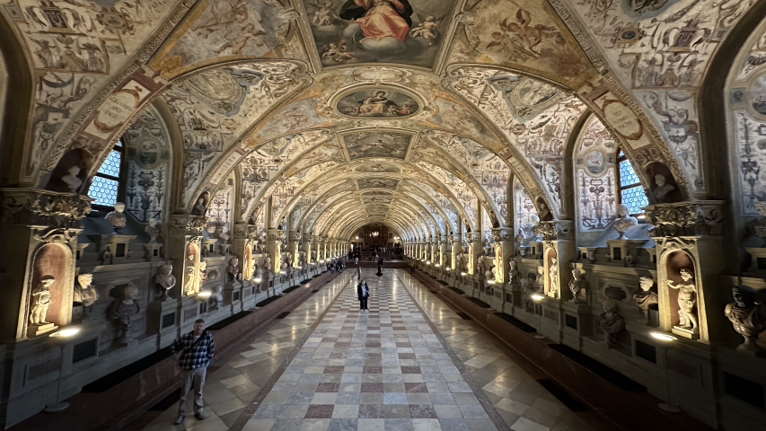
王宮城堡1. 慕尼黑王宮 (Residenz München)
德國最大的城市宮殿，曾是巴伐利亞君主們的居所。內部包含文藝復興、巴洛克與洛可可等多重風格，壯麗的「古物館 (Antiquarium)」大廳絕對是視覺焦點。
💭 Bryan 親測：用超划算的價格，賞盡慕尼黑不同時期風格迥異的王室之巔。若要聽導覽機，至少預留三小時哦！另外我覺得珍寶館可以不用去，如果您剛好有巴伐利亞國家博物館的行程～～
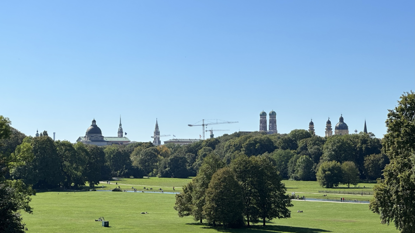
公園 / 免費2. 英國花園 (Englischer Garten)
比紐約中央公園還大的都市綠肺！夏季時充滿日光浴與野餐的人潮，中國塔旁的露天啤酒花園更是體驗慕尼黑生活節奏的絕佳去處。
💭 Bryan 親測：真的很美很適合放空的公園，特別是在潺潺小溪的另一側，欣賞那在山丘上有名的白色涼亭！
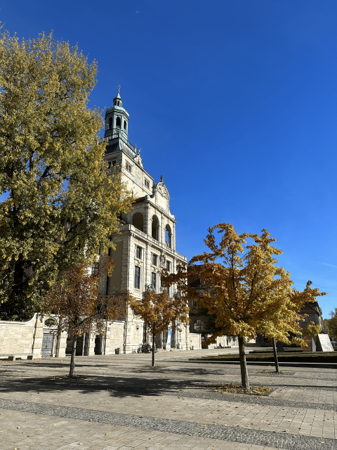
博物館 / 週日1€3. 巴伐利亞國立博物館 (Bayerisches Nationalmuseum)
德國最重要的文化歷史博物館之一，館藏豐富的象牙雕刻、掛毯與中世紀武器，是深度了解南德與巴伐利亞歷史的藝術殿堂。
💭 Bryan 親測：展覽從史前時代到近代的巴伐利亞歷史與珍品，簡直是慕尼黑王宮珍寶館的放大版。非常之大，若要細看一定要預留一整天！
💡 每週日全天門票只要 1€。
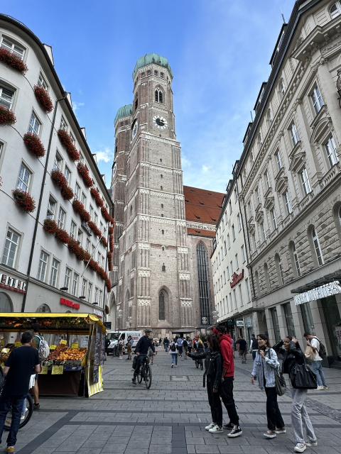
教堂 / 登高 / 免費4. 聖母教堂 (Frauenkirche)
慕尼黑最具標誌性的雙洋蔥圓頂教堂。傳說中教堂內部地板上留有魔鬼的腳印「魔鬼的腳印 (Teufelstritt)」，增添了一抹神祕色彩。
💭 Bryan 親測：極為醒目的地標建築，不過室內沒什麼裝潢讓我有點意外，但至少參觀不用錢。登塔才要錢，至於是否登塔見仁見智，有電梯直接到頂樓，但不是戶外觀景台(有玻璃罩著)，而且拍不到完整的聖母教堂。不過有冷氣是件好事：）
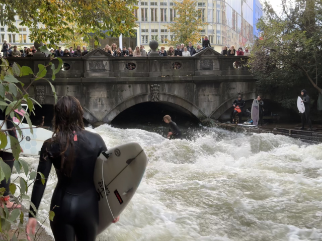
特色景點 / 免費5. 冰溪衝浪點 (Eisbachwelle)
位於英國花園南端邊緣，這條人工河流製造出了連續的急流波浪，一年四季都有衝浪好手在此挑戰極限，是慕尼黑最獨特的街頭奇景。
💭 Bryan 親測：你知道在慕尼黑這歐洲的中心，也有衝浪的地方嗎？如果剛好散步到英國花園，不妨晃過來看看吧～
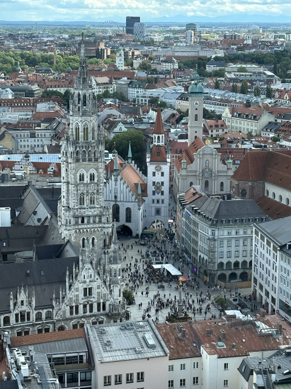
公共建築 / 免費6. 瑪麗亞廣場 (Marienplatz)
自 1158 年起便是慕尼黑的心臟地帶。廣場中央矗立著瑪麗亞圓柱，四周被新舊市政廳等華麗歷史建築環繞，終年熱鬧非凡。
💭 Bryan 親測：慕尼黑最知名的廣場，也是舊城區的交匯。這裡也是觀賞新市政廳壁鐘表演的絕佳點唷！
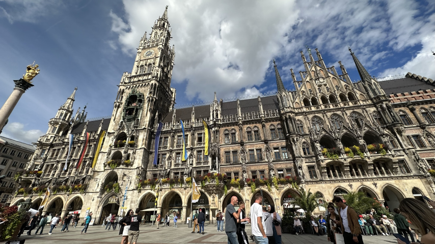
公共建築 / 免費 / 登高7. 新市政廳 (Neues Rathaus)
這座壯觀的新哥德式建築最著名的就是每天定時演出的「木偶報時鐘 (Glockenspiel)」，重現了巴伐利亞大公的婚禮場景。
💭 Bryan 親測：室內有如走進霍格華茲的走廊裡，重點是完全免費(除非想上鐘塔)！另外還有絕美的市政廳圖書館(但開放時間極為稀少)。資訊都可以在下面連結找到哦！找個沒鎖的門就勇敢的走進去吧～
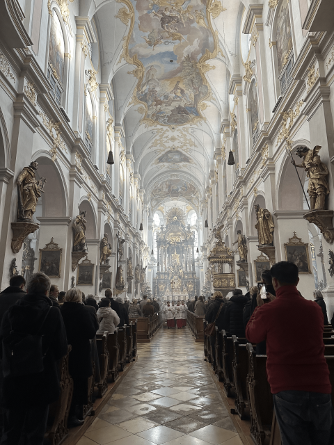
宗教建築 / 登高 / 免費8. 聖彼得教堂 (St. Peter)
慕尼黑最古老的教區教堂，被當地人親切地稱為「老彼得 (Alter Peter)」。內部裝飾華麗，擁有精美的巴洛克式主祭壇。
💭 Bryan 親測：上塔樓要付費，但絕對值得！雖然有網子，但格子不小，能拍到明信片裡的風景(瑪麗亞廣場+新市政廳+聖母教堂)。
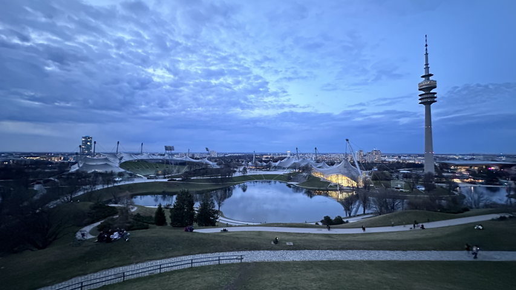
公園 / 免費9. 奧林匹亞公園 (Olympiapark München)
專為 1972 年慕尼黑奧運而建，其如同蜘蛛網般的波浪形玻璃帳篷屋頂設計，至今看來依然極具前衛與未來感。
💭 Bryan 親測：非常適合慢跑或散步，建築與自然的景觀融合的恰到好處，非常推薦一訪！
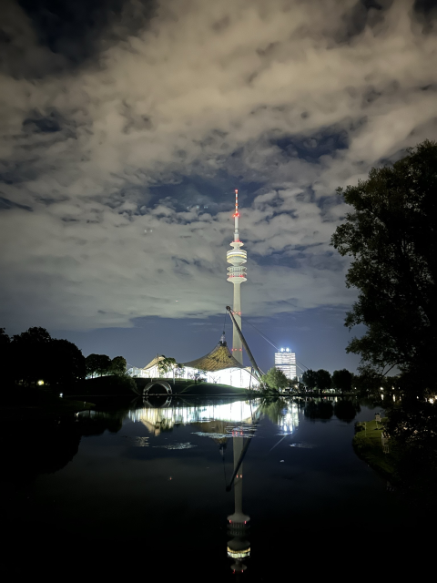
登高10. 奧林匹亞塔 (Olympiaturm)
高達 291 公尺的電視塔，是慕尼黑最高建築。頂部的觀景台提供了無死角的 360 度全景，天氣晴朗時景色無與倫比。
💭 Bryan 親測：視野真的非常非常好，甚至可以看到南方地平線的阿爾卑斯山！
⚠️ 暫時關閉，預計2027年第一季再次開放！
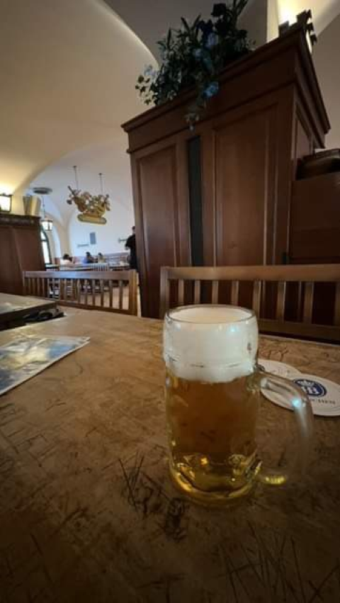
飲食餐廳 / 免費入內11. 皇家啤酒屋 (Hofbräuhaus München)
全世界最著名的啤酒館，擁有近五百年的歷史。穹頂繪滿壁畫的大廳裡，每天都有穿著傳統服飾的巴伐利亞樂隊熱情演奏。
💭 Bryan 親測：這裡不只能喝啤酒，也有道地餐點，如豬腳、鹼水結、香腸等～當然還有最有特色的當當地樂團，能欣賞最道地的民俗音樂！不過Hofbräuhaus其實是連鎖品牌，不一定要人擠人啦(但只有這裡才有樂團表演就是)。
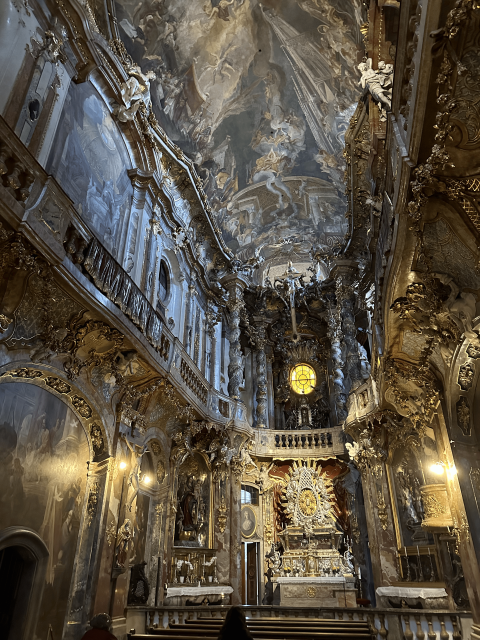
宗教建築 / 免費12. 阿桑教堂 (Asamkirche)
隱身在鬧區街道旁的南德洛可可式晚期代表作。這座私人教堂空間極為狹長，但內部卻佈滿了極其繁複華麗的金箔與壁畫裝飾。
💭 Bryan 親測：室內小而精緻的教堂，而且還是兩兄弟建造的，非常有看頭的慕尼黑隱藏景點。
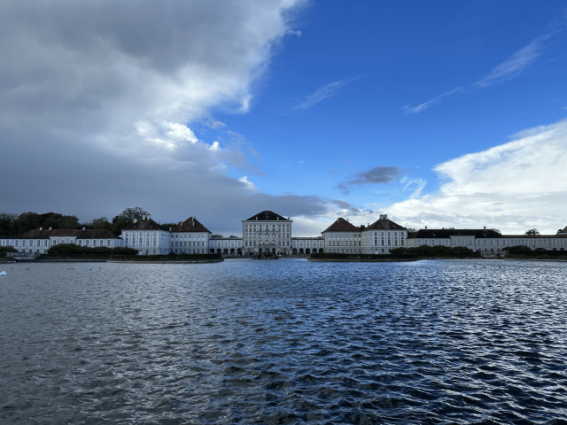
王宮城堡 / 花園免費13. 寧芬堡宮 (Schloss Nymphenburg)
巴伐利亞統治者的夏宮，擁有華麗的巴洛克式對稱立面。後方廣達 200 公頃的幾何法式花園與湖泊，是天鵝與水鳥們的天堂。
💭 Bryan 親測：宮殿本身我覺得若去過王宮可以不用進去，但馬車博物館非常精彩！後面巨大的免費花園也非常適合散步唷！
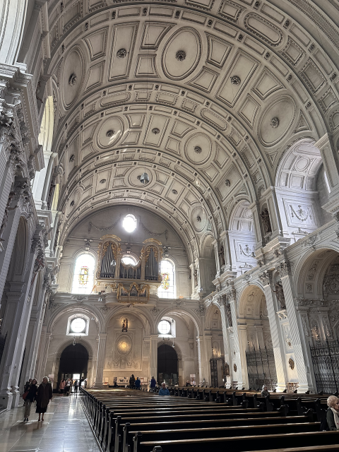
宗教建築 / 免費14. 聖米歇爾教堂 (St. Michael Kirche)
阿爾卑斯山以北最大的文藝復興式教堂，擁有當時世界第二大的無支柱拱頂（僅次於羅馬聖伯多祿大殿）。巴伐利亞著名的「童話國王」路德維希二世便長眠於此地下墓室。
💭 Bryan 親測：壯觀的幾何洛可可/巴洛克式屋頂非常精彩，是諾伊豪瑟大街上值得一看的教堂！
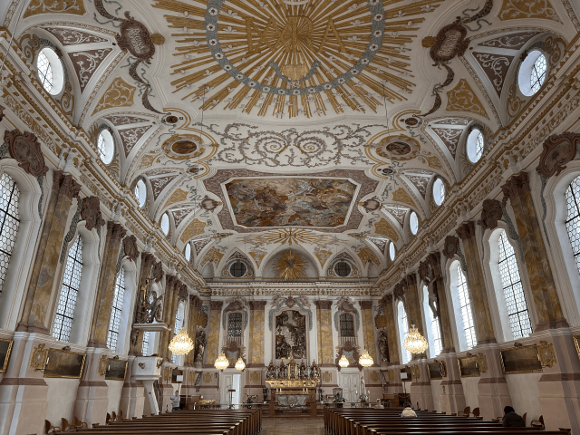
宗教建築 / 免費15. 伯格塞爾教堂 (Bürgersaalkirche)
外觀極為樸素的紅磚建築，內部卻分為上下兩層截然不同的空間。下層莊嚴肅穆，上層大堂則裝飾著明亮的巴洛克風格壁畫。
💭 Bryan 親測：位於二樓的大堂非常雄偉壯觀，從外面根本看不出來呢！
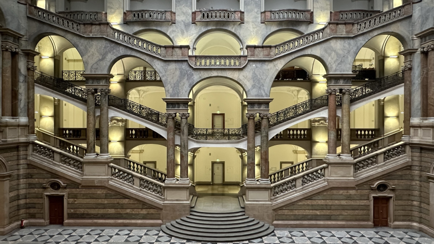
公共建築 / 免費16. 正義宮 (Justizpalast München)
建於19世紀末的新巴洛克式巨作，目前為巴伐利亞邦司法部所在地。著名的反納粹組織「白玫瑰」成員，就是在此地受審。
💭 Bryan 親測：四面對稱的巨大中央大廳非常壯觀，也能參觀從前在納粹時期白玫瑰慘案的紀念展區。
💡 免費入內，但入口處需經過安檢。
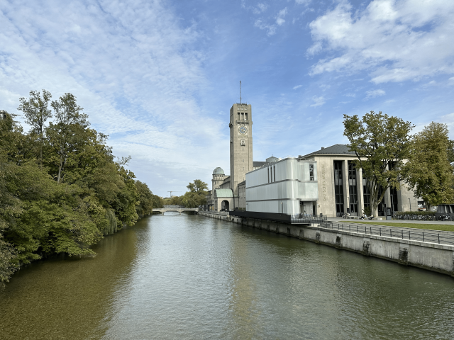
博物館17. 德意志博物館 (Deutsches Museum)
全球最大、最重要的科技與科學博物館，坐落於伊薩爾河的一座小島上。從採礦、航太、古典樂器到早期的電腦發明應有盡有。
💭 Bryan 親測：科工/博館放大版！展覽的是德國從古至今的科學工藝。我記得最酷的還有一張第一次發現核分裂的桌子！如果想慢慢看，絕對不要以為能在一天內看完。我可是花了兩個整天呢～
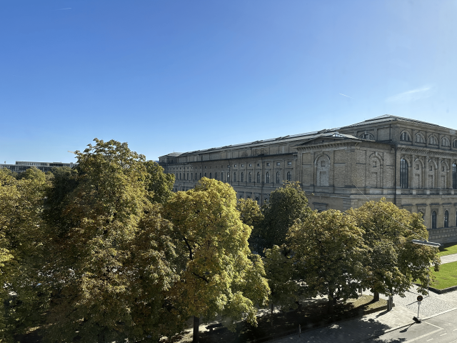
博物館 / 週日1€18. 老繪畫陳列館 (Alte Pinakothek)
世界最古老、館藏最豐富的美術館之一。專注於 14 至 18 世紀的歐洲大師畫作，包含達文西、拉斐爾與魯本斯等人的真跡。
💭 Bryan 親測：光影斑斕的巨大樓梯、梵谷的其中一幅向日葵都能在這裡找到！
💡 每週日全天門票只要 1€。
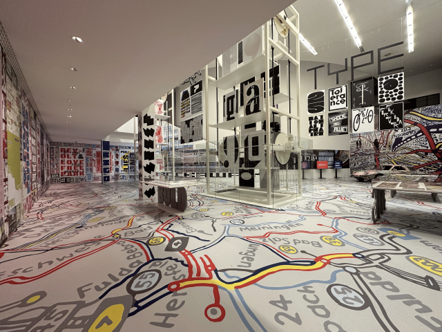
博物館 / 週日1€19. 現代藝術畫廊 (Pinakothek der Moderne)
歐洲最大的現代藝術、建築與設計博物館之一。建築本身就是一件簡約的幾何藝術品，內部常有極具啟發性的前衛特展。
💭 Bryan 親測：很新潮很酷的現代美術館。我覺得裡頭也有一些比較貼近生活的應用藝術，不會說都看不懂唷～～
💡 每週日全天門票只要 1€。
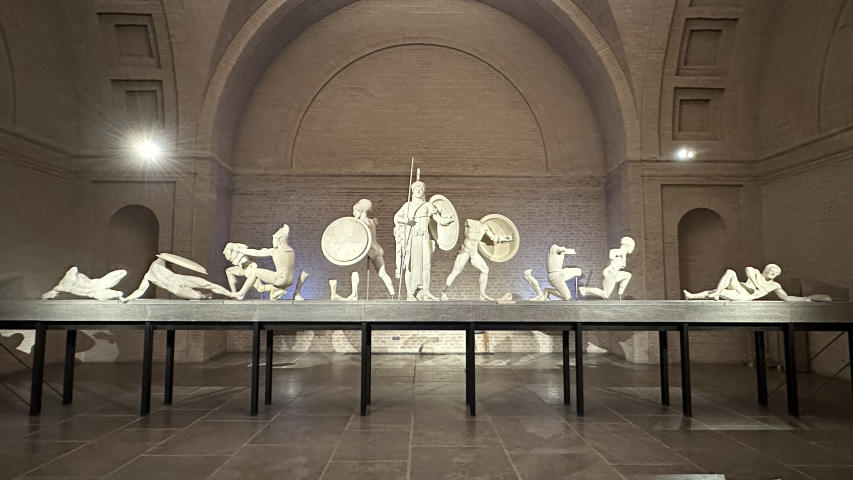
博物館 / 週日1€20. 州立文物博物館 (Glyptothek)
慕尼黑最古老的公共博物館，建築設計仿造古希臘神廟。館內專門收藏並展出古希臘與古羅馬時期的精美大理石雕塑。
💭 Bryan 親測：展館不大，就繞一圈而已，但雕塑非常精彩！記得，同一張票還可以去對面的州立古典博物館 (Staatliche Antikensammlungen) 唷！
💡 每週日全天門票只要 1€。
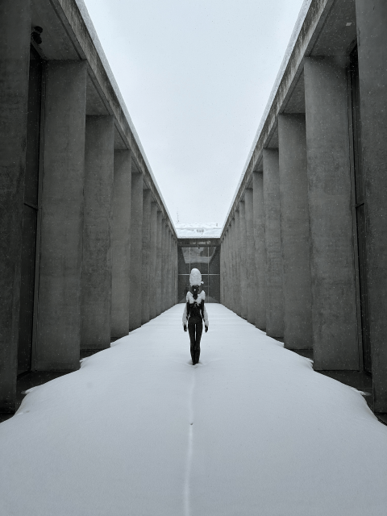
博物館 / 週日1€21. 州立埃及藝術博物館 (Staatliches Museum Ägyptischer Kunst)
這是一座隱藏在地下的現代化博物館！透過採光極佳的玻璃天井與巧妙的光影設計，將幾千年前的古埃及文物襯托得極具神秘感。
💭 Bryan 親測：想不到巴伐利亞為何有埃及的文物吧，你來了就知道為什麼了～當然展品不若大英博物館，但動線規劃的很好，有半天時間的話不妨來參觀～～
💡 每週日全天門票只要 1€。
🏔️ 慕尼黑近郊一日遊：阿爾卑斯山腳下的大冒險
慕尼黑是前往德國南部屋脊與童話大道的完美玄關。你可以利用超划算的「巴伐利亞邦票 (Bayern Ticket)」搭乘火車自行前往，或報名慕尼黑車站出發的省心一日團：
📍 自行前往推薦 (DB 德鐵 / 公車)
達赫集中營 (KZ-Gedenkstätte Dachau)
⏱️ 約 20 分鐘納粹德國建立的第一座集中營，現為紀念館與反思歷史的重要遺跡。
施萊斯海姆宮 (Schloss Schleißheim)
⏱️ 約 35 分鐘巴伐利亞選帝侯的雄偉夏宮，擁有華麗對稱的巴洛克庭園。
新天鵝堡 (Neuschwanstein)
⏱️ 約 2.5 小時迪士尼城堡的原型！座落於阿爾卑斯山腳下，德國最夢幻的地標。
楚格峰 (Zugspitze)
⏱️ 約 3 小時德國最高峰，可搭乘齒軌火車或絕美高空纜車登頂，將德國與奧地利群山盡收眼底。
布格豪森城堡 (Burg Burghausen)
⏱️ 約 2 小時不愧是金氏紀錄認證全世界最長的城堡，走過五個庭院每個都令人印象深刻～
國王湖 (Königssee)
⏱️ 約 3.5 小時德國最深、最清澈的冰川湖，四周被高聳岩壁環繞，被譽為德國九寨溝。
羅滕堡 (Rothenburg ob der Tauber)
⏱️ 約 2.5 小時浪漫大道上保存最完整的中世紀童話古城，漫步半木造建築交織的石板路。
奧格斯堡 (Augsburg)
⏱️ 約 30-50 分鐘這裡最知名的大概就是木偶劇院了！這裡有個博物館一定要去(雖然都是德文的)，另外由於以前是重要的主教區，大教堂非常雄偉，也一定要去！
雷根斯堡 (Regensburg)
⏱️ 約 1.5 小時二戰中未受破壞的多瑙河畔古城，被列為世界文化遺產，擁有迷人的中世紀石橋。
🚐 懶人首選：慕尼黑出發直達一日團
德國國鐵（DB）雖發達但近期經常大誤點或罷工取消，且前往新天鵝堡或國王湖等山區多需轉乘數次客運，一旦錯過接駁會非常麻煩。選擇車站旁集合出發的一日專車團，是降低風險、提高獨旅效率的聰明決策。
🎉 年度慶典：三大必訪狂歡時刻
感受巴伐利亞最純粹的熱情與酒精
慕尼黑人對於慶典有著極致的狂熱！這裡不僅有舉世聞名的十月啤酒節，連春夏季也有充滿傳統風情的民俗市集與環保藝術節，是體驗大口吃肉、大口喝酒的最佳時機。
源於1810年王室婚禮，是全球最大民俗慶典。每年秋季於特蕾西婭草坪舉辦，吸引逾六百萬人次。現場設有各大酒廠的巨型帳篷，民眾常穿傳統服飾大口飲酒、享用烤半雞並參與嘉年華。
相較於動輒擠滿幾萬人、需要提前幾個月訂位大帳篷的「啤酒節」，這是一個更具在地生活感、步調悠閒的傳統露天市集。這裡有古董、手工藝品、舊書攤和傳統骨董旋轉木馬，非常適合尋寶。
一個融合了世界音樂、戶外劇場、環保藝術展覽與多元文化市集的另類大型慶典。冬季場更是慕尼黑最具特色的「非傳統」聖誕市集代表，充滿濃厚的波希米亞氛圍與有機美食。
🚆 交通全攻略：機場快線、市區移動與邦票解析
📍 從慕尼黑國際機場 (MUC) 出發
近郊鐵路 (S-Bahn) S1 / S8 線
官方直達鐵路🛫 起點機場航廈地下車站 (München Flughafen Terminal)
🏁 終點慕尼黑中央車站 (München Hbf) 及市區各大站
⏱️ 時間約 45 分鐘
⏳ 班距兩線交替，每 10 分鐘一班
💶 價格單程 15.1€ (購買涵蓋 Zone M-5 的車票)
📍 慕尼黑市區交通與票券系統 (MVV)
MVV 大眾運輸網絡
慕尼黑的市區交通由 MVV (慕尼黑交通及資費集團) 統一營運，涵蓋了 S-Bahn (近郊鐵路)、U-Bahn (地下鐵)、Tram (路面電車) 與 Bus (公車)。慕尼黑市中心絕大部分的景點（包含寧芬堡宮）都在最核心的 Zone M (M區) 內。
💳 慕尼黑旅遊通票與「德鐵月票」超級神券
慕尼黑城市通票 (Munich City Pass)
適合對象：想要瘋狂跑遍室內博物館與皇宮的重度打卡者。
包含內容：免費參觀 40+ 景點（如慕尼黑王宮、寧芬堡、各種 Pinakothek美術館等，甚至可選新天鵝堡方案）、免費隨上隨下巴士，並可加購公共交通。
慕尼黑卡 (Munich Card)
適合對象：主要在外頭走跳、看建築外觀，不一定每個博物館都要進去的自由靈魂（團體票更划算）。
包含內容：享有眾多景點折扣優惠，並「直接包含」免費無限次搭乘 MVV 公共交通。
巴伐利亞邦票 (Bayern Ticket)
適合對象：當天需要前往近郊（如國王湖、新天鵝堡、薩爾斯堡、紐倫堡）長途移動的人。
包含內容：當日免費無限次搭乘巴伐利亞邦內「所有」的慢車 (RE, RB)、S-Bahn、U-Bahn、公車與電車（不含 ICE 等高鐵）。越多人共乘分攤越便宜！
德國月票 (Deutschland-Ticket)
終極省錢大絕
適合對象：行程跨越德國多個邦、旅行超過 3-5 天的旅人。
包含內容：訂閱制（可隨時取消）。一個月內全德國無限次搭乘所有的市內交通與慢車（RE, RB），是你玩遍德國（含新天鵝堡、國王湖交通）的無敵神卡！
⚠️ 注意：這是訂閱制服務。購買後請務必在規定期限內（通常是當月10號前）手動申請取消次月扣款。
🚄 德鐵官網訂購月票 (Deutschland-Ticket)🛏️ 住宿建議：精選火車站旁的高性價比避風港
| 🛏️ 住宿飯店 / 青旅 | 🔗 預訂連結 | 💰 平均房價參考 | ⭐ 旅客評分 | 💡 站長為何推薦 |
|---|---|---|---|---|
| Wombat's City Hostel Munich Hbf 📍 Google Maps | EUR 35 - 70 / 晚 | 約 8.5 / 10 車站旁，機能極強 |
就在慕尼黑中央車站旁，對於每天要搭火車跑一日遊的人超級方便。歐洲知名連鎖品牌，附設酒吧且極度安全。 | |
| Euro Youth Hotel 📍 Google Maps | EUR 30 - 60 / 晚 | 約 8.8 / 10 復古建築，酒吧歡樂 |
同樣緊鄰中央車站。建築本身極具古典氣息，內部卻是活力滿滿的青年聚落，一樓的酒吧氣氛極佳。 | |
| The 4You Hostel & Hotel 📍 Google Maps | EUR 25 - 55 / 晚 | 約 8.2 / 10 安靜單純，早餐豐富 |
相比其他青旅，這裡更偏向商務旅館的寧靜感，非常適合不想被派對打擾的獨旅者。加購的自助早餐 CP 值極高。 | |
| Jaeger´s Munich 📍 Google Maps | EUR 30 - 65 / 晚 | 約 8.0 / 10 交通樞紐，中規中矩 |
距離中央車站僅需步行 2 分鐘。雖然設施相對中規中矩，但若是為了每天搭火車衝景點，這地點無可挑剔。 | |
| Wombat’s Munich Werksviertel 📍 Google Maps | EUR 40 - 80 / 晚 | 約 9.0 / 10 文青特區，全新現代 |
Wombat's 在慕尼黑東站(Ost)旁的新館。位於充滿塗鴉與貨櫃屋的文創特區，設施極新且質感超高，治安也比中央車站好。 |
🍝 在地美食指南：巴伐利亞的豪邁味蕾
🍽️ 必吃美食
來到慕尼黑，絕對要拋開熱量的束縛！大口吃肉與無限暢飲的啤酒，才是體驗南德生活最正確的姿勢：
與水煮德式豬腳不同，巴伐利亞的烤豬腳外皮烤得極度酥脆（會卡滋作響），內裡豬肉軟嫩多汁。通常搭配馬鈴薯球（Knödel）與濃郁醬汁享用。
慕尼黑傳統早點。以小豬肉和香料製成，當地人傳統上「只在中午 12 點前食用」。剝除外衣後沾甜芥末醬，配白啤酒與扭結麵包（Brezn）是絕配。
啤酒屋極受歡迎的國民美食。外皮烤至金黃酥脆、香氣四溢，肉質鮮嫩，非常適合搭配一公升裝的巨無霸啤酒（Maß）。
經典的巴伐利亞/奧地利甜點。將鬆餅煎好後撕成碎塊，撒上大量糖粉並搭配蘋果泥或莓果醬，口感鬆軟帶點蛋香微甜。
被譽為「德式起司通心麵」。現做的手工麵疙瘩拌入大量融化起司與香脆的洋蔥碎，口感濃郁邪惡卻讓人停不下來。
將慕尼黑啤酒與檸檬汽水以 1:1 混合，酒精濃度僅約 2%，帶有清爽的柑橘酸甜感，是當地人在炎熱午後啤酒花園的最愛。
慕尼黑歷史最悠久的酒廠，至今仍使用傳統的木栓玻璃瓶裝瓶。其經典的 Helles（光標麥酒）麥香濃郁、泡沫綿密且收口極為清爽。
🎒 獨旅實戰：友好餐廳與平價清單
在慕尼黑想大口吃肉喝啤酒，一個人去也是完全沒問題的！以下 5 間特色店鋪，從經典酒館到平價熱食，非常適合獨旅者造訪：
| 🍴 餐廳名稱 | 💰 價格水平 | 📍 交通位置 | 💡 站長推薦理由 |
|---|---|---|---|
| Augustiner-Keller 📍 在地圖開啟 | 中價位 巨型傳統啤酒屋 |
靠近中央車站西側 |
當地人最愛的啤酒花園之一，擁有巨大的戶外栗樹林區與溫暖的室內地窖。這裡的烤豬腳與皇帝煎餅極度美味，氣氛熱鬧但不會像皇家啤酒屋那樣擁擠觀光化。 |
| Steinheil 16 📍 在地圖開啟 | 低價位 超巨平價炸豬排 |
國王廣場/慕尼黑工大旁 |
學區附近的神級平價餐廳。主打比臉還大的德式炸豬排（Schnitzel），附贈一大盤薯條與沙拉。價格便宜份量驚人，獨旅者絕對能吃撐。 |
| Restaurant Andy's Krablergarten 📍 在地圖開啟 | 中價位 炸豬排專門店 |
森德靈門 (Sendlinger Tor) 附近 |
除了慕尼黑烤肉外，這家的維也納炸豬排也極為出名，甚至可以選擇豬肉或火雞肉，搭配特製的起司蘑菇醬，是極度撫慰人心的 Comfort Food。 |
| Münchner Suppenküche 📍 在地圖開啟 | 極低價位 市場熱湯專賣店 |
穀物市場 (Viktualienmarkt) 內 |
位於著名的穀物市場內。如果你不想吃大魚大肉，這家專賣各式西式濃湯與清湯的小店是完美的選擇。點碗熱湯配麵包，立吞區站著吃，非常愜意。 |
| Stragula Realwirtschaft 📍 在地圖開啟 | 低價位 在地溫馨小酒館 |
Westend 住宅區內 |
遠離觀光一級戰區的在地小酒館。氣氛溫暖昏暗，餐點以實惠的巴伐利亞家常菜為主，店員親切，一個人坐在吧檯喝杯啤酒非常自在。 |
🇩🇪 德國獨旅生存避雷箱
交通：紙本車票必打卡
德國大眾運輸車站沒有閘門，採「榮譽制」，但查票員神出鬼沒且罰款極重。若是購買實體單程票/日票，上車前務必在月台的藍色或黃色小機器「打上時間印記 (Entwerten)」，沒打卡視同逃票！
建議下載 DB Navigator 或 MVV App 購買電子票，付款後自動啟用，完全不用找機器打卡，還不怕弄丟。
作息：小心週日全面停擺
德國嚴格執行「週日公休法規 (Sonntagsruhe)」。在星期天，所有的超市（包含 Aldi, Rewe）、藥妝店 (dm, Rossmann) 甚至百貨公司全部大門緊閉，街上宛如空城。
獨旅者務必在「週六傍晚前」採買好週末所需的糧食與水。若真的忘記，只能去中央火車站內或機場的少數超市搶購物資。
環保：寶特瓶押金制 (Pfand)
在德國超市買瓶裝水或飲料，結帳時會多收 0.25€ 的「空瓶押金 (Pfand)」。喝完千萬不要丟進垃圾桶！這是一筆不小的隱藏開銷。
將空瓶收集起來，帶回任何一間超市入口處的「退瓶機 (Pfandautomat)」，機器會吐出一張收據，拿去結帳櫃檯可以直接換回現金或折抵消費。

Bryan | Europe Solo Guide
「獨旅不是孤單，而是給自己一場完整的自由。」
熱愛穿梭在歐洲老城區的石板路上與壯麗群山間。目前已獨自走訪 41 個歐洲國家，致力於將複雜的交通、住宿與隱藏景點，轉化為有溫度的獨旅攻略。希望這篇文章能幫你省下找資料的時間，把精力留給旅途中的美好。
✉️ 聯繫我 / 合作邀約